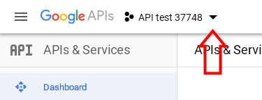
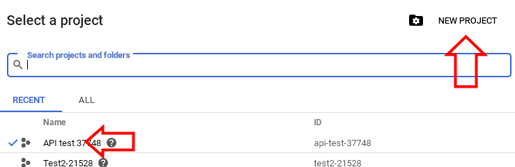
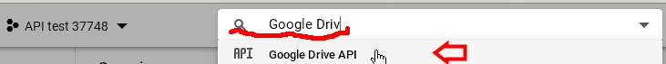
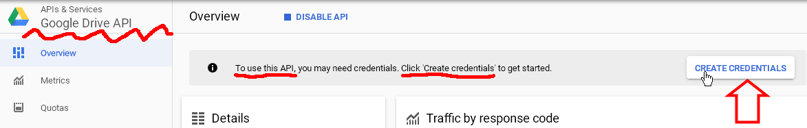
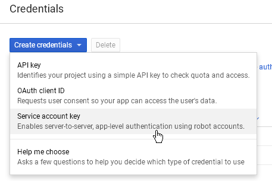
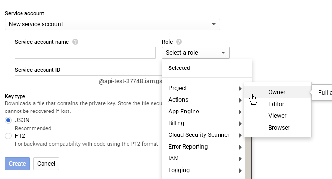
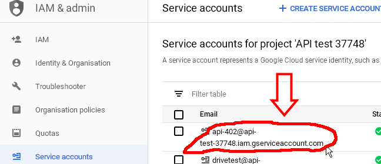
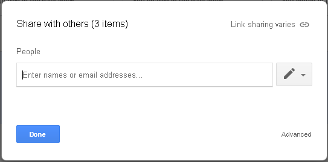
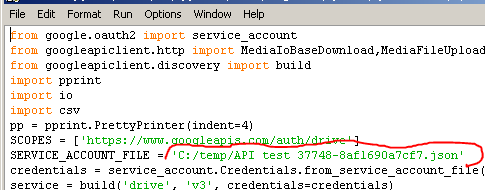
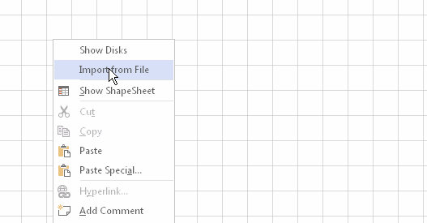

The previous version of the TreeView template received information through the File System Object. This makes it possible to display the structure of folders and files on the local computer. But when displaying the structure of other storages, problems arise because the File System Object does not work with them. You can reduce this problem by connecting a network drive or webdav technology. Such drives look the same as regular computer drives. However, not all storage provides the ability to connect through vebdav. For example, Google Drive does not work with vebdav.
Visio TreeView template version 2019 provides the ability to import data from a text file. This new feature allows you to build TreeView charts for many different data stores. You just have to present the structure of the folders and files of the storage in the desired format. Typically, this requires a scanner that uses the API of the required storage.
An example of such a scanner for Google Drive is the Google Drive Scanner for the Visio TreeView template.
The scanner works through the Service Account. This means that to use it, you must create and configure a service account for your area of Google Drive, download a key file and save it on a working machine. You can transfer the key file to another user, after which he will also be able to view the structure and build a diagram of your Google Drive area.
The scanner is a Python 3 script using the google-api-python-client library. The text of the program is available in the DOWNLOADS section. You can simply use this example or develop a similar scanner in another language. It is important to get the output data file in the same format.
The process of creating a diagram consists of 3 stages:
1. Using the administration tools, you prepare Google to work with the scanner. To prepare the Google Drive area, you need to have owner rights. Only your area you can explore and show to other users.
2. Using a scanner, you get a data file containing the folder structure of Google Drive. This can be done by you or another user to whom you will transfer the JSON file with the service account key.
3. Using the Visio TreeView template, you draw a chart. Any user who has a data file and Visio TreeView template can do this.
Stage 1. Google preparation
You must create a service account, provide access to Google Drive for the service account and download the JSON file with the service account key. Consider this process in pictures.
Service account
First you need a project in the developer's console. A project is a unifying concept for other resources. You can use one of the existing projects or create a new one.

The list of available projects is shown by clicking on the project selection pointer.

After selecting or creating a project, you must connect the Google Drive API to it. To do this, enter the text "Google Drive" in the filter window. During the input process, you will see a list of available APIs from which you need to select the Google Drive API.

The next step is to create an account for the selected API. Click the "Create Credentials" button.

Select "Service account key" from the list of account types.

Indicate that you need a New service account, enter its name. In the Role field, select Project and Owner. Select JSON as the key file format.

After clicking the Create button, an account will be created and the JSON key file will be downloaded to your computer.You will use this file later when programmatically accessing Google. It might be better to move it from the Download folder to a more convenient location.
Go to the IAM & admin tab and click Service accaunts button. You will see the email of the service account. Copy this email. It will be required to provide access to Google Drive.

This concludes the work with the Developer console. Now you need to provide access to Google Drive.
Google Drive
Open the Google Drive panel (https://drive.google.com/drive/).
Select the My Drive tab. Select the folders and files that you intend to grant access to. Select the Share item in the context menu. Enter the email of the service account that you saved earlier, and click the Done button.

Now your disk will be available for access through the service account.
Stage 2. Using a scanner
In the second stage you need:
- Python 3.4 or later version.
- Google API client for Python library.
- Google Drive Scanner for the Visio TreeView template.
1. If Google API client for Python library is not installed, install it with the command:
pip install --upgrade google-api-python-client2. Find the service account key that you downloaded when setting up Google. You must substitute the path to the key file in the program into the variable SERVICE_ACCOUNT_FILE. Open the ServAcc.py file in IDLE and edit the value of the variable.

The scanner is now ready for use.
3. Run the program. The DriveList.csv file will be created in the same folder in which the program is located. This data file is required to build the Google Drive storage structure using the Visio TreeView template.
Stage 3. Using Visio TreeView template
Create a Visio document using the template D_2019_e.vst.
To start creating a diagram using a data file, you must use the "Import from File" function. This will show the Input Box for entering the path to the data file. After clicking OK, the diagram displays all the root elements of the repository. Further work happens as described in the template documentation.

Additional links:
New Visio TreeView template functionality
Google Drive scanner for Visio TreeView template